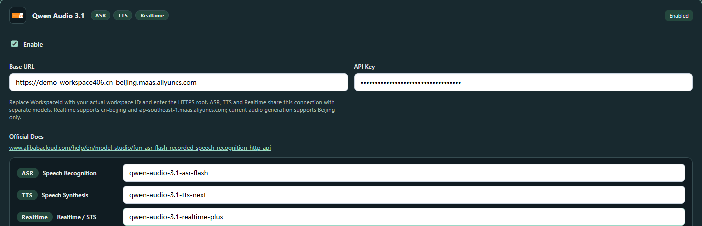
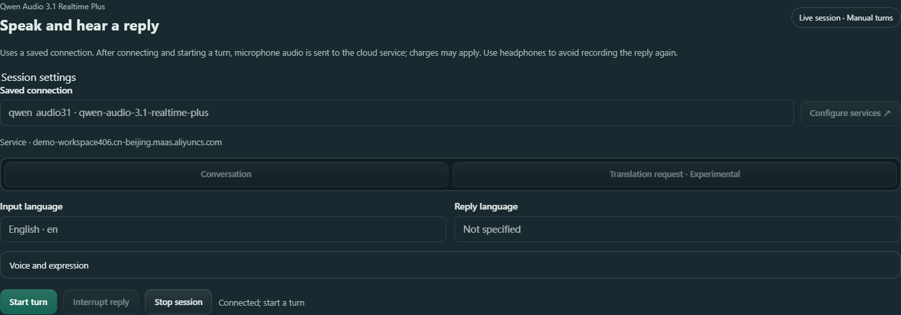
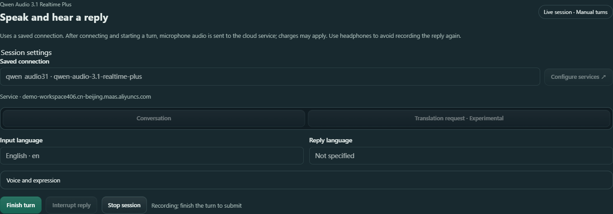
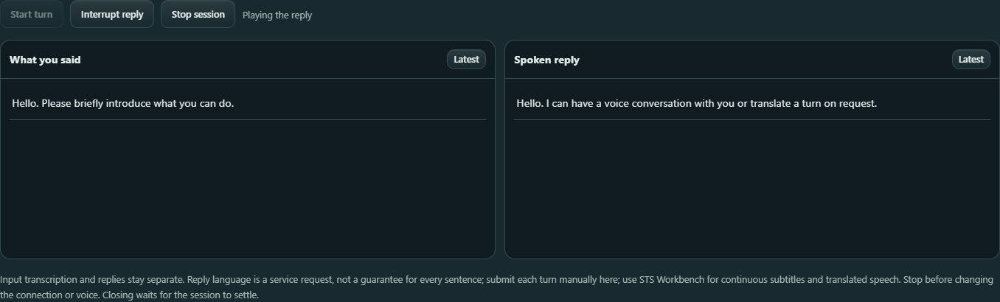
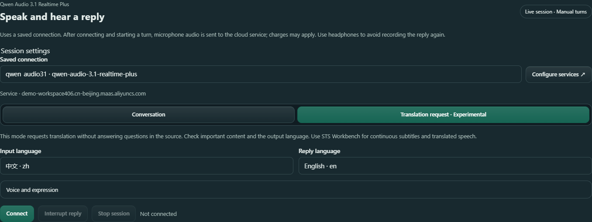

Scenario guide
Live voice conversation and turn-by-turn translation
Choose a saved voice connection, submit a spoken turn, then read and listen to its reply. Try one short sentence before a longer conversation.
Try your first turnWhat you will get
Your input transcription and the service reply appear in separate columns. Choose a reply language, system voice and expression instructions, or request a translation of each turn. Start and finish turns manually here. For ongoing subtitles and translated speech, use STS Workbench.
Before you start
- An account with access to Qwen Audio 3.1 Realtime Plus, and its WorkspaceId and API key.
- A working microphone and output device. Check the recording device in Setup. Headphones help prevent the reply from being recorded again.
- A network connection to the selected cloud service. No local voice model download is needed.
Connect opens a cloud session. Start turn sends microphone audio to the selected service; charges may apply. This page uses system voices and uploads no cloning reference recording.
Check account access, regions and model details in the official Alibaba Cloud real-time voice guide.
Try one spoken turn
- 01
Save the connection in Setup
Open the API services step in Setup Wizard and enable Qwen Audio 3.1. Enter your actual workspace HTTPS root and API key, then enter
qwen-audio-3.1-realtime-plusin the realtime model field. Finish the wizard and save. If you already use a Qwen connection, fill its realtime field while keeping recognition and synthesis model fields separate.Beijing uses
https://{WorkspaceId}.cn-beijing.maas.aliyuncs.com; Singapore useshttps://{WorkspaceId}.ap-southeast-1.maas.aliyuncs.com. Replace the bracketed part with your actual WorkspaceId. Use the region where the service is enabled, with no added API path, port or/v1. Check the individual guides for regions supported by other voice features.
Actual application interface · Click to enlarge. A local simulated session and preset captions illustrate the controls; no cloud call, microphone capture or physical playback took place. - 1Enable Qwen Audio 3.1 and reuse its existing service card.
- 2Use your actual WorkspaceId and the region where your service is enabled.
- 3Enter your API key. The illustration will use only a masked, invalid demonstration key.
- 4Set the realtime model to qwen-audio-3.1-realtime-plus; keep recognition and synthesis fields separate.
- 02
Select the saved connection and wait until ready
Open Voice Tools → Model Setup → Cloud API and choose Qwen Audio 3.1 · Realtime. Select your Saved connection and check the service host below it. Do not enter the address or key again. If it is missing, select Configure services to check and save it in Setup.
Start with Conversation. Set Input language to the language you will speak. Set Reply language to the language you want to hear, or leave Not specified. Select Connect and wait for Connected; start a turn.

Actual application interface · Click to enlarge. A local simulated session and preset captions illustrate the controls; no cloud call, microphone capture or physical playback took place. - 1Choose the saved connection and check the service host below it.
- 2Select the language you will speak, or choose Automatic if needed.
- 3Select a reply language, or leave Not specified for a conversation.
- 4When the connected session is ready, select Start turn.
- 03
Start a turn, then finish it
Select Start turn and speak. The button changes to Finish turn and the status shows recording. Connection and language settings stay locked. Select Finish turn when done to submit the sentence, then wait for the reply. Finish turn keeps the session connected for another turn.

Actual application interface · Click to enlarge. A local simulated session and preset captions illustrate the controls; no cloud call, microphone capture or physical playback took place. - 1Select Finish turn to submit the sentence when you are done.
- 2Check the recording state, then wait for the reply after submission.
- 3Settings stay locked while the session is active; stop before changing them.
- 04
Check your words and the reply
What you said holds the input transcription on the left. Spoken reply holds the service response on the right. Receiving… means more text may arrive. Check the completed input for missing words, names and numbers. Reply language is a request to the service, so check the actual text and speech.
After reading earlier text, select Latest in that column. Wait until the session is ready before starting the next turn.

Actual application interface · Click to enlarge. A local simulated session and preset captions illustrate the controls; no cloud call, microphone capture or physical playback took place. - 1Review What you said, especially names, numbers and missing words.
- 2Read Spoken reply; Receiving… means more text may arrive.
- 3Select Latest to follow new content in that column again.
- 4Select Interrupt reply to stop the current reply.
- 5Select Stop session before leaving and wait for settlement.
- 05
Take a short break or interrupt a reply
For a short break, finish the current turn and wait for its reply without starting another turn. To stop a reply that is generating or playing, select Interrupt reply. An unfinished reply is marked Interrupted. Wait until the session is ready before speaking again. To leave, select Stop session and wait for it to finish.
- 06
Stop before leaving
Select Stop session. Wait until the session is stopped and Connect appears again before changing settings or starting another recording task. Closing Voice Tools also waits for settlement. If stop is not confirmed, the panel stays locked; select Stop again and wait. Reading a tutorial does not stop an active session.


Request translation of each turn
Stop the current session first. Select Translation request · Experimental and choose Reply language. For example, set Input language to 中文 and Reply language to English. Reconnect, then use Start turn → speak → Finish turn.
This mode requests a translation of the original meaning. Questions in the source should be translated rather than answered. Review translations, names, numbers and the actual output language. Check important content yourself. For ongoing recognition and spoken translation, follow the live interpretation guide.


- 1Choose Translation request · Experimental to request translation rather than answers.
- 2The example uses 中文; select the language you will actually speak.
- 3The example uses English; review the actual output language for important content.
- 4Reconnect, then use Start turn, speak, and Finish turn.
Adjust the voice and expression
Before connecting, expand Voice and expression. Choose a System voice, switch Expressive emotion on or off, or add short expression instructions such as “Reply briefly and naturally.” The combined expression and translation instructions are limited to 4,000 characters. Use ordinary text and line breaks. Stop the session before making changes.
For reference-recording cloning, use the reference cloning guide. To generate a recording you can save, see the voice design guide.
How to check your first turn
The connected session lets you start a turn. After submission, input and reply appear in their own columns and you can hear the reply. Check the content, language and speech before continuing. Stop ends the session and makes Connect available again. The example screenshots explain controls; they do not show your account's results.
If something goes wrong
No saved connection is available
In Setup, check that Qwen is enabled and that your actual workspace root, API key and realtime model have been saved. Do not configure a second key on the usage page.
Connection failed or timed out
Check the network, workspace region and account model access. Stop the session before editing settings, then reconnect.
The microphone provided no audio or stopped recording
Check the recording device in Setup, system recording permissions and the device connection. Stop, then try another short turn.
Reply text appears but you hear no sound
Check the default output device, headphones, mute and volume. Try another turn. If there is still no audio, stop and keep the error shown on the page.
A translation answers a question or uses the wrong language
Check Translation request · Experimental and Reply language. Try a shorter turn and review important content. Use STS Workbench for ongoing subtitles and translated speech.
Connection, language or voice settings cannot be changed
The session is still active. Select Stop session and wait for it to settle.